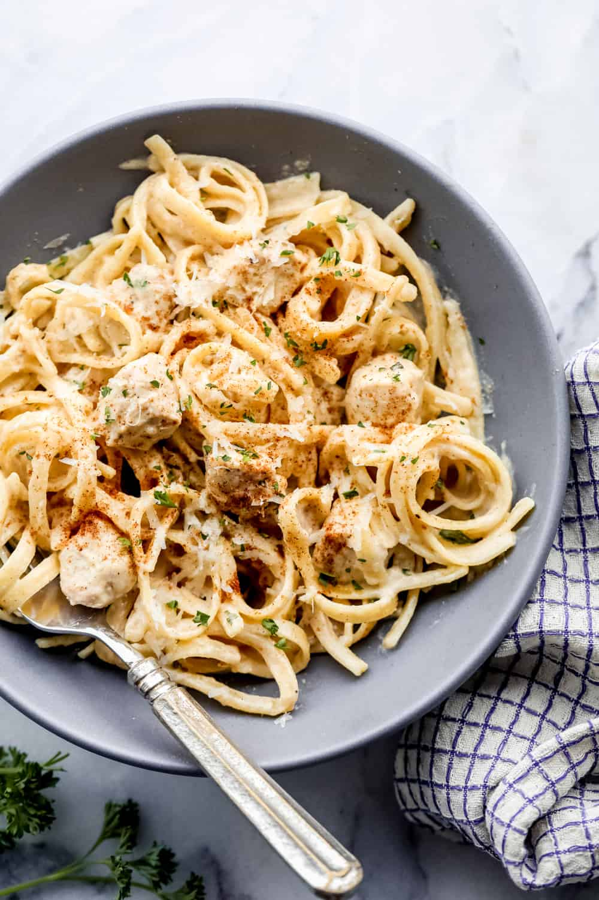

Cajun Chicken Alfredo

Description
The below recipe will make a deliciously creamy chicken alfredo, inspired by Chili's.
Ingredients
- 3 tablespoons olive oil
- 3 cloves garlic, chopped
- 1 cup cooked sausage
- 2 chicken breasts, sliced
- 1 tablespoon cajun seasoning
- 2 cups of heavy cream
- 4 cups penne pasta
- 1 cup parmesan cheese
- 1/4 cup fresh parsley
Instructions
- Heat oil in a large pot over high heat. Cook the garlic, sausage, and chicken until garlic starts to brown and the chicken is no longer pink.
- Sprinkle over the Cajun seasoning and stir to evenly coat the sausage and chicken.
- Add the cream, and bring to a boil.
- Add the pasta, stirring until evenly mixed.
- To finish, add parmesan and parsley, stirring until cheese melts and pasta is coated with a thick sauce.